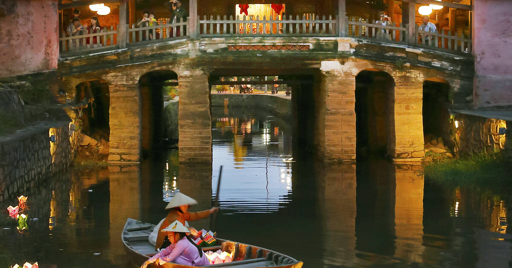

Global Tourism: Vietnam
Featured Destinations
Hanoi
Vietnam's capital blends ancient traditions with modern energy. Explore the historic Old Quarter, serene Hoan Kiem Lake, and countless street food vendors.
Historic Temples
Street Food Paradise
Cultural Heritage
Ho Chi Minh City
The vibrant economic hub where French colonial architecture meets modern skyscrapers. Experience the energy of Ben Thanh Market and the historic Cu Chi Tunnels.
Modern Skyline
Historical Sites
Nightlife
Da Nang
A coastal gem offering stunning beaches, the famous Golden Bridge, and proximity to the ancient town of Hoi An. Perfect blend of relaxation and adventure.
Golden Bridge
Beautiful Beaches
Mountain Views

Hoi An
A UNESCO World Heritage site with perfectly preserved ancient architecture, colorful lantern festivals, and world-renowned tailoring shops.
UNESCO Heritage
Lantern Festivals
Ancient Architecture

Ha Long Bay
Marvel at thousands of limestone karsts rising from emerald waters. Take a cruise through this natural wonder and explore mysterious caves and floating villages.
Natural Wonder
Cruise Experience
Cave Exploration

Sapa
Experience breathtaking mountain landscapes, terraced rice fields, and authentic hill tribe culture in Vietnam's stunning northern highlands.
Rice Terraces
Hill Tribes
Mountain Trekking